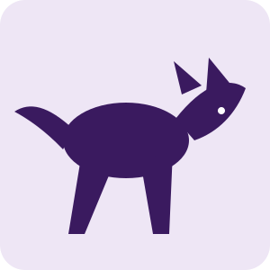

Fauna • Monitoramento
Guardiões do Cerrado
Projeto de monitoramento de mamíferos de médio e grande porte em áreas protegidas, com foco em registros de lobo-guará, tamanduá-bandeira e tatu-canastra.
- Observação e registro de fauna
- Ciência cidadã e apoio de voluntários
- Produção de materiais educativos